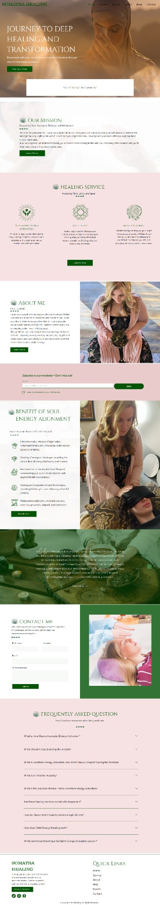

The challenge

← Back to Work
Wellness · Booking
Somatra Healing
A healing brand needs atmosphere, but atmosphere alone cannot explain what someone should do next.
Platform usedWix
Project typeWellness · Booking
The story behind the build
The atmosphere mattered, but the website still had to explain what to do next.
Somatra Healing needed a softer, more reflective digital experience without allowing the service information to become vague.
I used Wix to keep the visual rhythm calm while making each service easier to understand in plain language. Booking and contact actions remain visible, but they do not overpower the atmosphere of the brand.
The result keeps the emotional quality of the wellness experience while giving visitors a practical route forward.
What I changed
- Use a calm visual rhythm instead of dense sections.
- Explain each service in plain, useful language.
- Keep booking and contact actions visible.
- Balance spiritual brand expression with practical navigation.
Where it ended